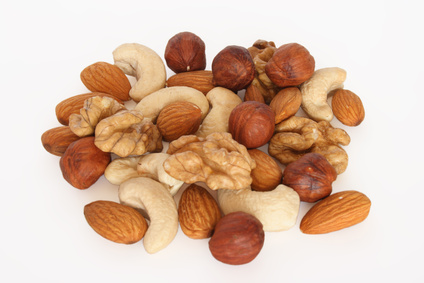

Tree Nuts

Nuts are usually grown under warmer conditions than are found in Ontario, but there are several types of nuts native to the province that are of interest for local consumption or commercial development (beaked hazelnut, black walnut). There are some non-native commercial species that have been imported. Many nuts require long hot growing seasons, and because they are growing near the northern limit of hardiness, they can be a risky crop.
Most are wind-pollinated and self-fruitful, although there are exceptions, and wild populations of at least some species appear to have mechanisms in place to encourage cross-fertilization, and produce higher quality nuts when cross-pollinated.
American Chestnut (Castanea dentata)
The chestnut was once an important tree in eastern deciduous forests, with the northern edge of its distribution in southern Ontario. After the chestnut blight was introduced in 1904, the species declined precipitously in the wild, and few trees remain in Ontario forests.
Chestnut is self-compatible, but still requires cross-pollination because the male and female flowers do not bloom at the same time on an individual tree. The flowers are in the form of catkins, and a variety of pollinators collect both nectar and pollen from the flowers. Unlike most other nut trees, the American chestnut is pollinated by insects. Wild trees generally cannot reproduce due to the isolation of individual trees, and artificial propagation is necessary to propagate the species.
In the related Caucasian chestnut tree, Castanea sativa, pollination by honey bees can improve total nut yield. A stocking rate of 1.5 colonies per hectare has been recommended. Because chestnuts are functionally self-sterile (due to the asynchrony of male and female flowers), pollenizers of a different variety should be available at a rate of one-tenth to one-half of the production trees. The pollenizers and production cultivars can be planted in different rows to simplify the harvest.
Almond (Prunus dulcis)
Although almond is not commercially cultivated to any great extent in Ontario, it is one of the most valuable crops and one of the largest users of managed honey bees in the world, most notably in California. It is a member of the same genus as stone fruits (cherry, plum, peach, apricot, nectarine), but differs in that the stone (nut) is the primary crop. Almond growing in Ontario is generally restricted to hobbyists and landscaping use, as the climate is too harsh and unpredictable for commercial production.
The flowers are self-incompatible, and require cross-pollination by insects with an appropriate pollenizer cultivar. There is a trend towards the development and use of self-compatible variety, although the effect of self-pollen on yield, size, and flavour requires further investigation.
For regular self-incompatible almonds, research has shown that the pollenizer trees must not be more than a few meters away for optimal fruit set, as honey bees tend to visit a single tree or cultivar during a foraging trip.
However, it has also been found that most (90%) of honey bees in an almond orchard carry cross-pollen on their bodies. In the case of honey bees, much of this pollen acquisition may result from transfer between foragers within the hive.
In Ontario, early pollination is essential if the tree is to have a chance to produce mature fruit. Each flower contains only one pair of ovules, so unlike pome fruits, asymmetry of poorly pollinated fruit is less of a problem. However, poorly pollinated blossoms may drop.
The presence of toxic compounds such as amygdalin in almond nectar and pollen can have ill effects on pollinators if consumed in large doses. This is a particular problem for honey bees pollinating large almond monocultures in the US.
Both bumble bees and blue orchard bees have demonstrated potential for pollinating almond, although further research into their effectiveness for this particular crop is necessary. Wild bees and possibly flies are may also be valuable.
Walnut, Butternut, Heartnut (Juglans spp.)
Cultivated members of this group in Ontario includes the native black walnut (Juglans nigra) and butternut (J. cinerea), and the exotic Japanese walnut, also known as the heartnut (J. ailantifolia). The cultivated walnut familiar to most consumers is the Carpathian walnut (J. regia), which is comparable to apple in hardiness for Ontario. There is also a hybrid of the butternut and the heartnut, which is known as the buartnut.
Members of genus Juglans are monoecious and wind-pollinated, with the male and female reproductive structures in separate flowers on each tree. Male flowers are found on long, pendulous catkins, while female flowers are small and inconspicuous, borne near the tips of the growing branches. Individual trees, while self-compatible, typically release pollen before or after the female flowers are receptive (depending on cultivar), which limits self-fertilization. Thus, other trees of an appropriate cultivar are necessary to ensure that pollen is available during female receptivity.
Pollination by a suitable cultivar is generally required to set a nut crop. Even species and cultivars that are self-fruitful, such as the heartnut, will produce a larger crop if cross-pollinated.
Hickory nut (Carya spp.)
This genus is also a member of the walnut family, and has similar reproductive biology. It includes a number of valuable nut crops such as pecan, shagbark hickory (Carya ovata), shellbark hickory (C. laciniosa), and northern pecan (C. illinoinensis). Also available are "hican" trees, which are a hybrid between shellbark hickory and pecan. Pecans in particular are poorly suited to the Ontario climate, although there are some naturally occurring genetic lines that have been found growing as far north as southern Wisconsin. These trees were likely planted by native Americans, and those that have managed to survive and produce fruit resulted in small, localized populations. All trees in this genus are self-fruitful, but the quality of the product seems to benefit from the planting of mixed cultivars, as much as is possible considering the climate restrictions. The trees can be expected to abort a high proportion of pistillate flowers whether or not they have been pollinated in response to resource availability rather than pollination deficiencies.
Hazelnut / Filbert (Corylus spp.)
There are several cultivated species of hazelnut, also known as filbert, and most are European in origin. The most commonly cultivated species is Corylus avellana, the European hazel. However, there are several species native to the New World that produce edible nuts, including American filbert (C. americana) and beaked hazelnut (C. cornuta). Hazelnuts bear flowers in the form of catkins, with male catkins and less conspicuous female flowers occurring separately. Both sexes are found on the same tree (monoecy) in most cases, although a few single-sex plants may occur. Beaked hazelnut, at least, is self-incompatible.
For all species, growers typically plant two varieties together to facilitate pollination and nut set. European hazelnuts are wind-pollinated, but cross-pollination is preferred despite some level of self-compatibility in this species. Although it produces smaller nuts, the native species are the preferred choice in most parts of Ontario, as the cultivated European hazel is not as hardy.
References
DeGrandi-Hoffman, G. 2001. The pollination of almonds. American Bee Journal 141:655-657.
DeGrandi-Hoffman, G., Thorp, R., Loper, G., & Eisikowitch, D. 1992. Identification and distribution of cross-pollinating honey-bees on almonds. Journal of Applied Ecology 29:238-246.
De Oliveira, D., Gomes, A., Ilharco, F.A., Manteigas, A.M., Pinto, J. & Ramalho, J. 2001b. Importance of insect pollinators for the production of the chestnut Castanea sativa. Acta Horticulturae 561:269-273.
Free, J.B. 1993. Insect Pollination of Crops, 2nd edition. Academic Press.
Jackson, J.F. 1996. Gene flow in pollen in commercial almond orchards. Sexual Plant Reproduction 9:367-369.
Kevan, P.G. & Ebert, T. 2005. Can almond nectar & pollen poison honey bees? American Bee Journal 145:507-509.
Kodad, O. & Company, R.S.I. 2008. Fruit quality in almond as related to the type of pollination in self-compatible genotypes. Journal of the American Society for Horticultural Science. 133:320-326.
Martinez-Garcia, P., Ortega, E., & Dicenta, F. 2011. Self-pollination does not affect fruit set or fruit characteristics in almond (Prunus dulcis). Plant Breeding 130:367-371.
McCarthy, B.C. & Quinn, J.A. 1989. Within- and among-tree variation in flower and fruit production in two species of Carya (Juglandaceae). American Journal of Botany 76:1015-1023.
McCarthy, B.C. & Quinn, J.A. 1990. Reproductive ecology of Carya (Juglandaceae): phenology, pollination, and breeding system of two sympatric tree species. American Journal of Botany 77:261-273.
Ortega, E., Martinez-Garcia, P. J., & Dicenta, F. 2006. Influence of self-pollination in fruit quality of autogamous almonds. Scientia Horticulturae 109:293-296.
Polito, V. S., Aradhya, M., Dangl, J., Grant, J., Pinney, K., Simon, C., Vaknin, Y., & Weinbaum, S. 2003. Walnut pollination dynamics: pollen flow and pollen loads in walnut orchards.. HortScience 38:741 (Abstract).
Sokolov, V.B. & Chernyshov, M.P. 1980. Chestnut (Castanea sativa) of the Black Sea area of the Caucasus. Pchelovodstvo 1:22-23.
Vossen, P. 2000. Chestnut culture in California. University of California, Division of Agriculture and Natural Resources, Publication #8010.
Wood, B.W. 1997. Source of pollen, distance from pollinizer, and time of pollination affect yields in block-type pecan orchards. HortScience 32:1182-1185.